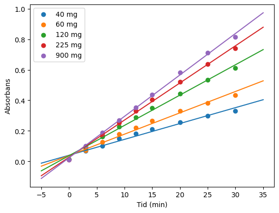
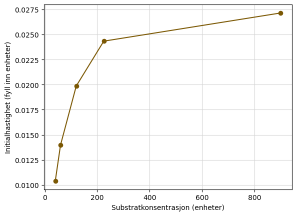
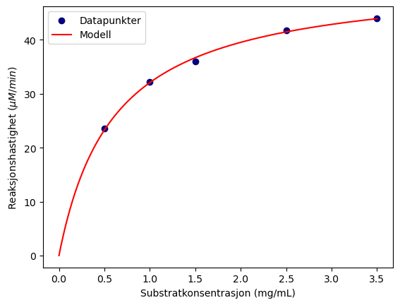
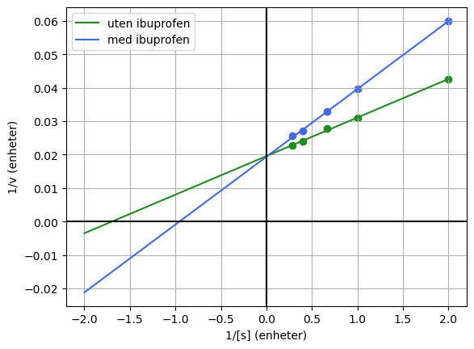
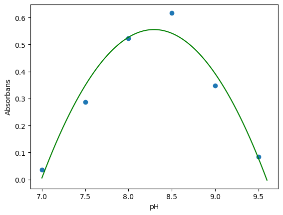

import pandas as pd
import numpy as np
import matplotlib.pyplot as plt
import scipy.optimize as opt
data = pd.read_csv("Absorbans_tid.csv")
tid = data["tid"]
absorbans = data["absorbans"]
# Definerer formen på regresjonsmodellen
def modell(x, a, b):
return a*x + b
koeff, covar = opt.curve_fit(modell, tid, absorbans)
# Finn a og b her
V0 = koeff[0]
I = koeff[1]
# Beregner funksjonsverdier til den lineære tilpasningen
t = np.linspace(0,35,100) # Nye t-verdier å plotte med
y = V0*t + I # Regresjonsmodellens y-verdier
# Plott funksjonen her
plt.scatter(tid, absorbans, color = "hotpink", label = "Datapunkter")
plt.plot(t, y, color = "darkslateblue", label = "Regresjonsmodell")
plt.xlabel("Tid (min)")
plt.ylabel("Absorbans")
plt.legend()
plt.show()
Intel MKL WARNING: Support of Intel(R) Streaming SIMD Extensions 4.2 (Intel(R) SSE4.2) enabled only processors has been deprecated. Intel oneAPI Math Kernel Library 2025.0 will require Intel(R) Advanced Vector Extensions (Intel(R) AVX) instructions.
import pandas as pd
import numpy as np
import matplotlib.pyplot as plt
import scipy.optimize as opt
dataliste = ['S40.csv' ,'S60.csv' ,'S120.csv' ,'S225.csv' , 'S900.csv']
S = [40,60,120,225,900] # Substratkonsentrasjoner i mikrogram/L
# Definerer formen på regresjonsmodellen
def modell(x, a, b):
return a*x + b
t = np.linspace(-5,35,100) # Nye x-verdier å plotte med
V = [] # Initialhastigheter
for i in range(len(dataliste)):
data = pd.read_csv(dataliste[i]) # Leser fila
koeff, covar = opt.curve_fit(modell, data["tid"], data["absorbans"])
V0 = koeff[0]
I = koeff[1]
y = V0*t + I # Regresjonsmodellens y-verdier
plt.scatter(data["tid"], data["absorbans"], label = str(S[i])+" mg")
plt.plot(t, y)
plt.xlabel("Tid (min)")
plt.ylabel("Absorbans")
V.append(V0) #legger til funnet initialhastighet til liste
# plt.savefig("initialhastigheter.png")
plt.legend()
plt.show()
# Lagrer dataene i en dataframe og skriver dem til en csv-fil
d = {"Hastighet": V, "Substratkonsentrasjon": S}
df = pd.DataFrame(d)
df.to_csv("Reaksjonshastigheter_test.csv", index = False)

import pandas as pd
import numpy as np
import matplotlib.pyplot as plt
data2 = pd.read_csv('Reaksjonshastigheter_test.csv')
V = data2["Hastighet"]
S = data2["Substratkonsentrasjon"]
plt.plot(S, V, marker = "o", color = "xkcd:shit brown")
plt.ylabel('Initialhastighet (fyll inn enheter)')
plt.xlabel("Substratkonsentrasjon (enheter)")
plt.grid(color='lightgrey')
plt.show()

import scipy.optimize as opt
import pandas as pd
import numpy as np
import matplotlib.pyplot as plt
data2 = pd.read_csv('Reaksjonshastigheter.csv')
V = data2["V"]
S = data2["S"]
def michaelis_menten(x, Vmax, Km):
return Vmax*x/(Km + x)
parametre, kovarians = opt.curve_fit(michaelis_menten, S, V)
Vmax = parametre[0]
Km = parametre[1]
x_ny = np.linspace(0, max(S), 1000)
y_model = michaelis_menten(x_ny, Vmax, Km)
plt.scatter(S, V, marker = "o", color = "navy", label="Datapunkter")
plt.plot( x_ny, y_model, "r-", label="Modell")
plt.ylabel('Reaksjonshastighet ($\mu M/min$)')
plt.xlabel("Substratkonsentrasjon (mg/mL)")
plt.legend()
plt.savefig("reaksjonsrate.tiff", dpi=500)

S_invers = 1/S
V_invers = 1/V
def modell(x, a, b):
return a*x + b
koeffisienter, kovarians = opt.curve_fit(modell, S_invers, V_invers)
Km_vmaks = koeffisienter[0]
vmaks_invers = koeffisienter[1]
vmaks_LB = 1/vmaks_invers
km_LB = Km_vmaks*vmaks_LB
print('stigningstall=', Km_vmaks, '\n','V_maks=', vmaks_LB, '\n','MM-konstant =', km_LB)
x_ny = np.linspace(-max(S_invers), max(S_invers), 1000)
y_modell = Km_vmaks*x_ny + vmaks_invers
plt.scatter(S_invers, V_invers, color = "maroon")
plt.plot(x_ny, y_modell, color = "black")
plt.ylabel("1/v (enheter)")
plt.xlabel("1/[s] (enheter)")
plt.axhline(0,color='black')
plt.axvline(0, color='black')
plt.grid()
plt.show()
stigningstall= 0.011531627249160294
V_maks= 51.09989832956896
MM-konstant = 0.589264980006578
km_LB
0.589264980006578
Km
0.607068096755897
import pandas as pd
def Lineweaver_Burk(filnavn, farge, navn):
"""
Funksjon som lager et Lineweaver-Burk-plott fra en datafil med
reaksjonsfart i første kolonne og substratkonsentrasjon i andre kolonne.
Parametre
---------
filnavn: .txt- eller .csv-fil som inneholder reaksjonsfarten V og substratkonsentrasjonen S
farge: ønsket farge på datapunktene og den tilpassede kurven.
navn: merkelapper (labels) for kurven.
Returnerer
----------
vmaks: Maks reaksjonsfart
km: Michaelis-Menten-konstanten
"""
data = pd.read_csv(filnavn)
V = data.iloc[:, 0] # Velger alle radverdier i første kolonne
S = data.iloc[:, 1] # Velger alle radverdier i andre kolonne
V_invers = 1/V
S_invers = 1/S
def modell(x, a, b):
return a*x + b
koeffisienter, kovarians = opt.curve_fit(modell, S_invers, V_invers)
Km_vmaks = koeffisienter[0]
vmaks_invers = koeffisienter[1]
vmaks = 1/vmaks_invers
km = Km_vmaks*vmaks
x_ny = np.linspace(-max(S_invers), max(S_invers), 100)
y_modell = Km_vmaks*x_ny + vmaks_invers
plt.scatter(S_invers, V_invers, color = farge)
plt.plot(x_ny, y_modell, color = farge, label = navn)
return vmaks, km
vmaks_original, km_original = Lineweaver_Burk("Reaksjonshastigheter.csv", "forestgreen", "uten ibuprofen")
vmaks_ibux, km_ibux = Lineweaver_Burk("Reaksjonshastigheter_ibuprofen.csv", "royalblue", "med ibuprofen")
plt.ylabel("1/v (enheter)")
plt.xlabel("1/[s] (enheter)")
plt.axhline(0, color='black')
plt.axvline(0, color='black')
plt.grid()
plt.legend()
plt.show()

A = [0.036, 0.287, 0.5225, 0.617, 0.347, 0.085]
pH = [7, 7.5, 8, 8.5, 9, 9.5]
a,b,c=np.polyfit(pH, A, 2)
x = np.linspace(7,9.6,1000)
y = a*x**2 + b*x + c
plt.scatter(pH,A)
plt.plot(x,y, color="green")
plt.xlabel("pH")
plt.ylabel("Absorbans")
plt.savefig("abs_ph.tiff", dpi=500)
